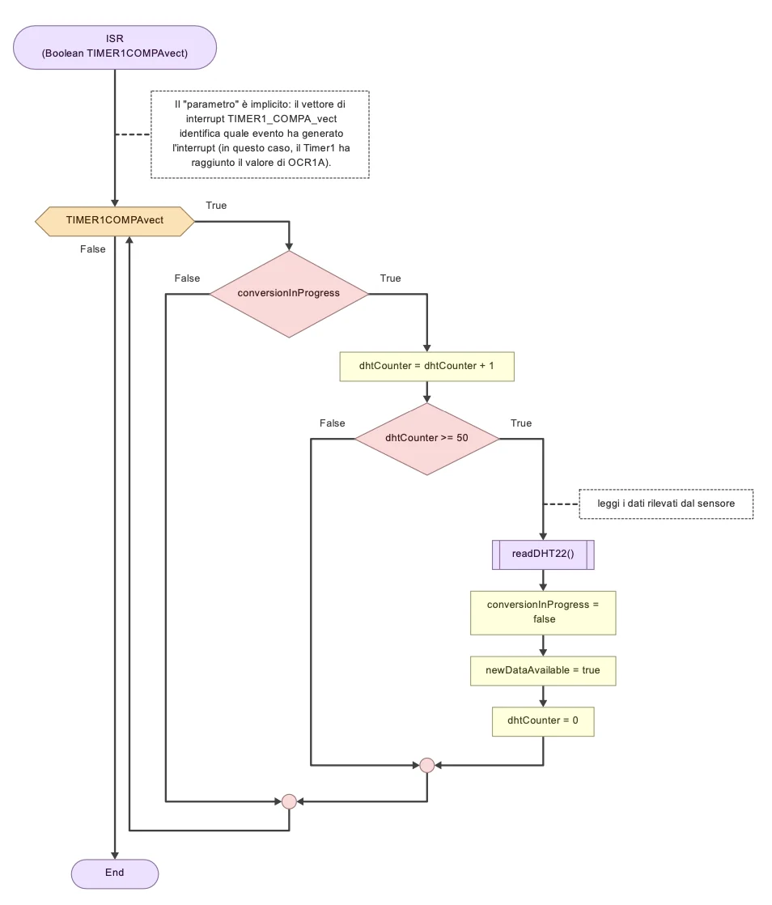
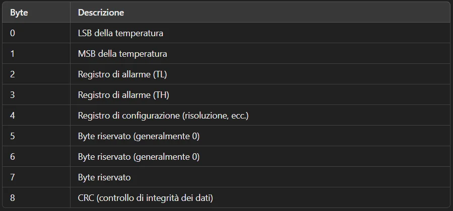
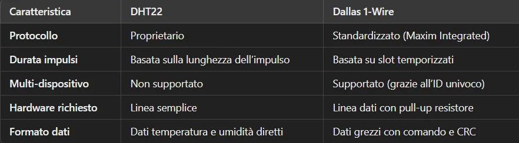
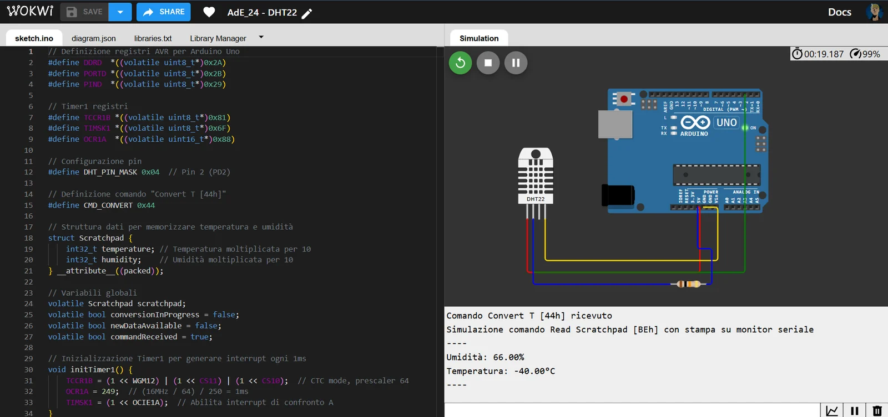
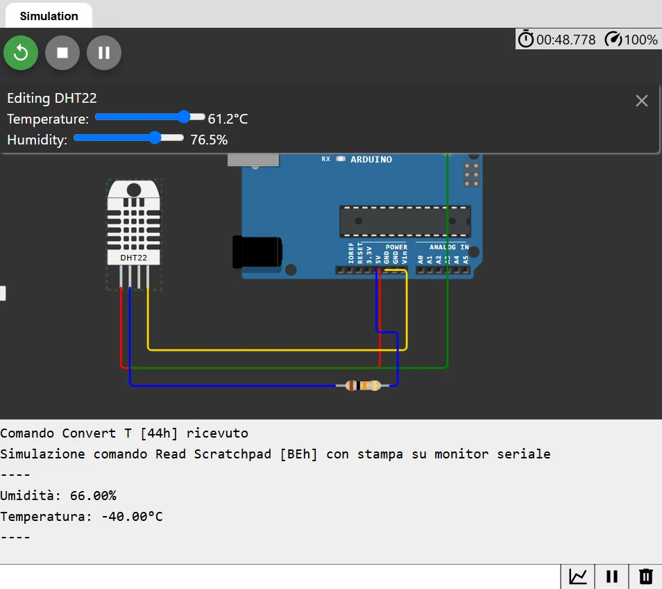

Embedded systems · ATmega328P
Embedded Firmware: 1-Wire Sensor Emulation
Bare-metal firmware that reads a DHT22 sensor and presents its values through a virtual 1-Wire scratchpad.
Overview
The brief was to build a small embedded system with limited machine resources. The firmware reads temperature and humidity from a DHT22, then exposes the measurements through a virtual 1-Wire device interface.
I used register-level I/O and a timer-driven state machine, and tested the behaviour in Wokwi.
My contribution
- Implemented the DHT22 reading and virtual 1-Wire command handling on an ATmega328P.
- Configured Timer1 in CTC mode with a prescaler of 64 and OCR1A = 249 to generate a 1 ms tick.
- Stored sensor values multiplied by 10 as integers, representing one decimal place in the scratchpad.
- Added a 50 ms conversion interval and checksum verification.
How it works
The sensor-reading state machine obtains the DHT22 values. A separate 1-Wire state machine handles the device commands and scratchpad response.
Timer1 supplies the 1 ms timing tick. A conversion waits 50 ms before the scaled integer readings and checksum are made available through the scratchpad.
Key decisions
Keep interrupt work short
Choice: Use a 1 ms Timer1 interrupt to update timing flags and leave longer work to the main state machines.
Why: Short interrupt handlers help keep the timing predictable and avoid doing sensor or protocol work inside the interrupt.
Trade-off: The states and shared flags need careful coordination to avoid timing and synchronisation errors.
Use scaled integers for the scratchpad
Choice: Store each value multiplied by ten rather than using floating-point values.
Why: This keeps the representation compact while retaining one decimal place.
Trade-off: The reading must be interpreted using the scale factor when converting it back to a displayed value.
Use direct register I/O
Choice: Control the relevant pins through DDRD, PORTD and PIND rather than Arduino helper functions or external libraries.
Why: The assignment focused on understanding the microcontroller's I/O and resource constraints.
Trade-off: Register-level code is tied more closely to the target hardware and needs explicit handling of pin states.
Results
The firmware was simulated in Wokwi, with screenshots showing the project setup and a running simulation.
The implementation demonstrates the timing and protocol behaviour in a simulator. It is not evidence of validation on a physical board.
Limits and next steps
Simulation does not cover every electrical or timing issue that could appear on physical hardware. The protocol is also an emulation for this project rather than a certified sensor implementation.
Next, I would test the firmware on an ATmega328P board with a logic analyser, check the timing margins across conditions, and document the pin connections from the original report.
Project images
Select an image to view it at a larger size.










Tools and methods
The flowchart, timing and simulator images are drawn from the embedded systems project material. The incorrect wiring image in the supplied assets has been left out.